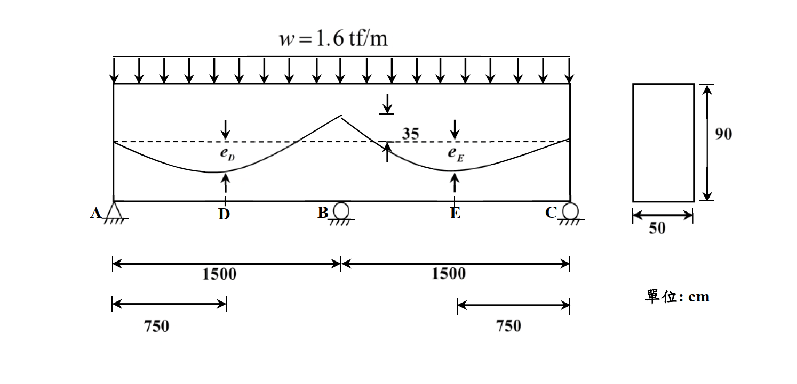
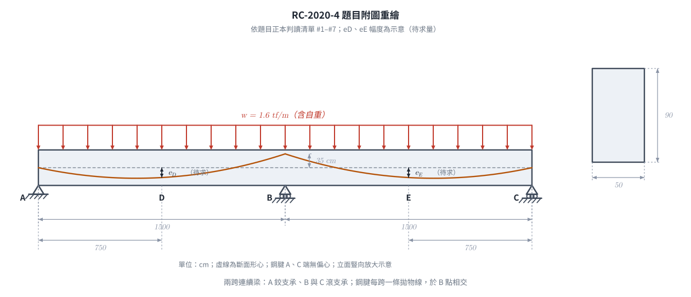

📄 題目正本：考卷原文・附圖・判讀清單（已確認）
RC-2020-4 題目正本
本檔只記錄考卷上寫了什麼、圖上畫了什麼，不含任何解法。解析見同資料夾
RC-2020-4.md。
判讀清單已經確認（凍結）；本檔原則上不再修改（改動須回考卷原圖並記 log）。
| 項目 | 內容 |
|---|---|
| 考卷 | raw/exams/RC-2020_鋼筋混凝土設計與預力.pdf 第 4 頁（頁次 4－4），第四題 |
| 考年 | 民國 109 年（2020） |
| 配分 | 25 分（㈠ 15 分、㈡ 10 分） |
| 附圖 | RC-2020-4-fig-1.png（兩跨連續梁立面＋斷面） |
| 判讀狀態 | 已確認（2026-11-15 使用者授權依 Claude 建議確認；轉錄 2026-11-15；PyMuPDF 110 dpi 全頁＋400–450 dpi 局部目視、文字層逐字核對；盲讀後才比對既有解析） |
1. 考卷原文（逐字）
四、一預力連續梁如下所示，受一均佈靜載（含自重）$w$ = 1.6 tf/m，預力鋼腱採拋物線型配置，鋼腱於支承 B 處之偏心為 35 cm。
㈠計算預力鋼腱於梁各跨度中點（D 與 E 點）之偏心值（$e_D$ 與 $e_E$）以及有效預力值 $P_e$，使預力不產生二次彎矩效應，且在 $P_e$ 與題目給定的載重作用下，梁斷面受均勻軸壓應力。（15 分）
㈡設有效預力 $P_e$ 與初始預力 $P_i$ 之比值為 0.8，求在初始預力 $P_i$ 以及題目給定的載重作用下，斷面 B 上緣與下緣混凝土之應力。（10 分）
2. 考卷給的公式、附表與參數
- 兩跨連續梁 A–B–C，跨度各 1500 cm；D、E 為兩跨中點（距 A、距 C 各 750 cm）。
- 斷面：矩形 50（寬）×90（深）cm。
- 均佈靜載（含自重）$w=1.6$ tf/m，全長。
- 鋼腱拋物線型配置；支承 B 處偏心 35 cm。
- ㈡ $P_e/P_i=0.8$。
- 沒有給：$f'_c$、容許應力、鋼腱面積（題目也不要求）。
- 卷首：作答規範：依據內政部於民國 108 年 2 月 25 日公布之「混凝土結構設計規範」或中國土木水利工程學會「混凝土工程設計規範與解說（土木401-100）」作答，未依上述規範作答，不予計分。注意事項：可以使用電子計算器。不必抄題，作答時請將試題題號及答案依照順序寫在試卷上，於本試題上作答者，不予計分。本科目除專門名詞或數理公式外，應使用本國文字作答。
3. 附圖

圖面文字照錄：w＝1.6 tf/m、35、e_D、e_E、A、B、C、D、E、1500、1500、750、750、90、50、單位: cm。
4. 判讀清單
| # | 項目 | 判讀 | 圖上／題文依據 | 把握 |
|---|---|---|---|---|
| 1 | 支承 | A 鉸支承（三角形）、B 與 C 滾支承（圓圈）；兩跨各 1500 cm | 附圖 450 dpi | 確定 |
| 2 | 斷面 | 矩形 50×90 cm | 附圖尺寸 | 確定 |
| 3 | A、C 端偏心 | 0（鋼腱端點落在形心虛線上） | 附圖 450 dpi，鋼腱兩端與虛線相交於梁端 | 確定 |
| 4 | B 點偏心方向 | 形心以上 35 cm：尺寸 35 的上箭頭指向鋼腱頂點高度的水平短線，下箭頭指向形心虛線 | 附圖 450 dpi | 確定 |
| 5 | D、E 位置 | 各跨中點（750 cm），$e_D$、$e_E$ 在形心以下、為待求 | 題文；附圖尺寸 750 | 確定 |
| 6 | 鋼腱線形 | 每跨一條拋物線，兩段於 B 點相交（圖畫成尖角）；題文要求求出使無二次彎矩且均勻軸壓的 $e_D$、$e_E$ | 附圖；題文 | 確定（解讀；2026-11-15 使用者授權依 Claude 建議確認） |
| 7 | 載重 | $w=1.6$ tf/m（含自重）兩跨全長均佈 | 附圖箭頭布滿全長；題文 | 確定 |
| 8 | ㈡ 載重 | $P_i=P_e/0.8$ 與 $w$ 同時作用，求斷面 B 上、下緣應力 | 題文 | 確定 |
| 9 | 考卷沒有給 | $f'_c$、容許應力 | 全題 | 確定（題目只求應力，不要求檢核） |
轉錄：2026-11-15（RC-U4-2+U4-3+U4-4 題目正本推廣・批 1）
確認：2026-11-15 使用者授權依 Claude 建議確認（RC-U4-2+U4-3+U4-4 題目正本推廣・批 1，關卡一）
考題編號：RC-2020-4
主分類： RC-U4-2 預力量與偏心量設計
副分類： RC-U4-1 預力梁斷面應力分析
設計法： WSD 工作應力法
標籤： 預力連續梁 一致腱 二次彎矩 等效載重法 均勻軸壓條件 偏心量設計 C線
1. 題目（考卷原文見題目正本）
考卷原文、公式／附表、附圖與判讀清單（已確認）見
RC-2020-4-problem.md。本節只列解題時最容易讀錯的地方與本解使用的記號；題意以題目正本為準。

重繪自考卷附圖，依題目正本判讀清單 #1–#7。本圖攔下的讀錯：B 點 35 cm 讀成形心下方；漏看 A、C 端偏心為 0。
常見誤讀
| 項目 | 正確判讀 | 常見誤讀 |
|---|---|---|
| B 點 35 cm | 形心以上 35 cm | 形心以下 |
| A、C 端 | 鋼腱在形心（偏心 0） | 端部有偏心 |
| 支承 | A 鉸、B 與 C 滾；兩跨各 15 m | — |
| ㈡ 預力 | $P_i=P_e/0.8$ 與 $w$ 同時作用 | 用 $P_e$ 算 ㈡ |
本解記號： $L_{AB}=L_{BC}$＝15 m；$b$＝50、$h$＝90 cm；$w$＝1.6 tf/m；$e_B$＝35 cm（形心上方）；$P_e/P_i$＝0.8。
2. 考題核心精神與出題者意圖（Core Concepts & Examiner's Intent）
核心觀念： 一致腱（concordant tendon）的設計原理：當鋼腱形狀使得預力等效荷載恰好與外部載重在各斷面產生等值反向彎矩，則：
- 無二次彎矩（超靜定反應不改變預力效果）
- 斷面僅受均勻軸壓，無彎曲應力
出題者意圖：
- 測驗「均勻軸壓 ↔ 每斷面 $M_{total} = 0$」的觀念
- 由 $P_e \cdot e(x) = M_{applied}(x)$ 同時解出 $P_e$ 和偏心分布
- 利用超靜定梁彎矩公式（支點彎矩 $M_B = -wL^2/8$，跨中彎矩 $M_D = wL^2/16$）
3. 解題戰略地圖與陷阱分析（Strategic Roadmap & Trap Analysis）
作戰計畫：
- 建立均勻軸壓條件：$P_e \cdot e(x) = M_{applied}(x)$（在每個關鍵斷面）
- 利用已知 $e_B = 35 \text{ cm}$ 和 $M_B = -wL^2/8$ → 求 $P_e$
- 代入 $M_D = wL^2/16$ → 求 $e_D = e_E$
- 小題(二)：$P_i = P_e/0.8$，計算等效彎矩 $M_{total}(B)$，求斷面 B 應力
三大陷阱：
| 陷阱 | 說明 | 對策 |
|---|---|---|
| 兩跨梁彎矩公式 | $M_D = wL^2/16$（非 $wL^2/8$），$M_B = -wL^2/8$ | 用三彎矩定理或直接記憶等跨結果 |
| 小題(二) 等效力矩方向 | $P_i > P_e$，等效上載 $> w$，B點淨力矩 = 殘差 | $M_{total}(B) = wL^2/8 \times (P_i/P_e - 1)$ |
| 斷面 B 上下緣判斷 | B點淨矩為正（下撓），上緣壓力更大 | 用 $\pm M_{total}/Z$ 分別計算上下緣 |
3.5 變數層次分析（Variable Hierarchy Analysis）
複習提示：第一次解題後，在每個卡住的知識點旁標記
⚠；第二次複習時只看有⚠的項目。
最終目標
(一) 由均勻軸壓條件求 eD、eE、Pe；(二) 由 Pi + w 求斷面 B 上下緣應力
本題關鍵公式
$$\text{Step 1: 均勻軸壓條件：} P_e \cdot e(x) = M_{applied}(x) \text{（每斷面）}$$
$$\text{Step 2: 由 B 點：} P_e \cdot e_B = |M_B| = \frac{wL^2}{8} \implies P_e = \frac{wL^2}{8 e_B}$$
$$\text{Step 3: 由 D 點：} e_D = \frac{M_D}{P_e} = \frac{wL^2/16}{P_e} = \frac{e_B}{2}$$
$$\text{Step 4: (二) } M_{total}(B) = M_{applied}(B) + M_{Pi,primary}(B) = -\frac{wL^2}{8} + \frac{P_i}{P_e} \cdot \frac{wL^2}{8} = \frac{wL^2}{8}\!\left(\frac{P_i}{P_e} - 1\right)$$
$$\text{Step 5: } \sigma_{top} = -\frac{P_i}{A} - \frac{\boxed{M_{total}}}{Z};\quad \sigma_{bot} = -\frac{P_i}{A} + \frac{\boxed{M_{total}}}{Z}$$
L1：題目直接給定
| 符號 | 數值 | 說明 |
|---|---|---|
| $w$ | 1.6 tf/m | 均佈靜載重 |
| $L$ | 15 m = 1500 cm | 各跨跨度 |
| $e_B$ | 35 cm（形心以上） | 支承B鋼腱偏心 |
| $b \times h$ | 50 × 90 cm | 矩形斷面 |
| $P_e/P_i$ | 0.8 | 損失比 |
L2：需知識點推導
Step 1：斷面幾何
| 符號 | 公式/來源 | 卡關? |
|---|---|---|
| $A$ | $50 \times 90 = 4500 \text{ cm}^2$ | |
| $I$ | $50 \times 90^3/12 = 3{,}037{,}500 \text{ cm}^4$ | |
| $Z_t = Z_b$ | $I/45 = 67{,}500 \text{ cm}^3$ |
Step 2：兩跨連續梁應用彎矩（均佈載重 w，等跨 L）
| 位置 | 彎矩 | 公式 | 卡關? |
|---|---|---|---|
| 中點 D, E | 正（撓） | $M_D = M_E = +wL^2/16$ | |
| 中間支點 B | 負（拱） | $M_B = -wL^2/8$ |
Step 3：求 Pe 與偏心量（一）
| 符號 | 公式 | 數值 | 卡關? |
|---|---|---|---|
| $M_B$ | $-wL^2/8$ | $-1.6 \times 225/8 = -45 \text{ tf·m}$ | |
| $P_e$ | $|M_B|/e_B = 45/0.35$ | $128.6 \text{ tf}$ | |
| $M_D$ | $+wL^2/16$ | $+22.5 \text{ tf·m}$ | |
| $e_D = e_E$ | $M_D/P_e = 22.5/128.6$ | $17.5 \text{ cm}$（形心以下） |
Step 4：斷面 B 應力計算（二）
| 符號 | 公式 | 數值 | 卡關? |
|---|---|---|---|
| $P_i$ | $P_e/0.8$ | $160.7 \text{ tf}$ | |
| $M_{Pi,primary}(B)$ | $+(P_i/P_e) \times |M_B|$ | $+56.25 \text{ tf·m}$ | |
| $M_{total}(B)$ | $-45 + 56.25$ | $+11.25 \text{ tf·m}$ | |
| $P_i/A$ | $160{,}714/4500$ | $35.71 \text{ kgf/cm}^2$ | |
| $M_{total}/Z$ | $1{,}125{,}000/67{,}500$ | $16.67 \text{ kgf/cm}^2$ |
L3：深層知識（不懂就卡住）
| 知識點 | 說明 | 卡關? |
|---|---|---|
| 一致腱的意義 | 鋼腱形狀使 $M_{primary}(x) = -M_{applied}(x)$，故 $M_{secondary} = 0$ 且無彎矩殘差 | |
| 小題(二) 為何 M_pi_primary 是正 | $P_i > P_e$，等效上拱力 $> w$，超額等效上拱力在 B 點創正（撓）彎矩 | |
| 兩跨梁 $M_D = wL^2/16$ 推導 | 由支反力 $R_A = 3wL/8$，$M_D = R_A \times L/2 - w(L/2)^2/2 = 3wL^2/16 - wL^2/8 = wL^2/16$ | |
| 偏心符號：B點在形心上方 | 在B處鋼腱在形心上方 → 使斷面受正（撓）等效彎矩 → 抵消外載負（拱）彎矩 |
4. 步驟化詳細計算過程（Step-by-Step Detailed Calculation）
斷面幾何
$$A = 50 \times 90 = 4{,}500 \text{ cm}^2,\quad I = \frac{50 \times 90^3}{12} = 3{,}037{,}500 \text{ cm}^4$$
$$y_t = y_b = 45 \text{ cm},\quad Z = I/45 = 67{,}500 \text{ cm}^3$$
小題(一)：求 $e_D$、$e_E$、$P_e$
Step 1：兩跨等跨連續梁（均佈載重 w）各關鍵斷面彎矩
支反力：$R_A = R_C = 3wL/8$，$R_B = 5wL/4$
$$M_B = -\frac{wL^2}{8} = -\frac{1.6 \times 15^2}{8} = -\frac{360}{8} = -45 \text{ tf·m} = -4{,}500{,}000 \text{ kgf·cm}$$
$$M_D = M_E = \frac{wL^2}{16} = \frac{1.6 \times 225}{16} = \frac{360}{16} = 22.5 \text{ tf·m} = 2{,}250{,}000 \text{ kgf·cm}$$
Step 2：均勻軸壓條件 → 一致腱
使斷面僅受軸壓（零彎矩）的條件：
$$M_{net}(x) = M_{applied}(x) + M_{prestress}(x) = 0$$
其中 $M_{prestress}(x) = P_e \cdot e(x)$（$e$ 在形心以下為正，以上為負）
▸ 在支承 B（鋼腱在形心以上 35 cm，$e_B = -35$ cm）：
$$M_{applied}(B) + P_e \cdot e_B = 0$$
$$-45 + P_e \cdot (-0.35) = 0 \implies P_e = \frac{45}{0.35} = \frac{900}{7} \approx \boxed{128.6 \text{ tf}}$$
▸ 在跨中 D（鋼腱在形心以下，$e_D > 0$）：
$$M_{applied}(D) + P_e \cdot (-e_D) = 0$$
$$+22.5 - P_e \cdot e_D = 0 \implies e_D = \frac{22.5}{128.6} = \frac{22.5}{45/0.35} = 0.35 \times \frac{22.5}{45} = 0.35 \times 0.5 = \boxed{0.175 \text{ m} = 17.5 \text{ cm}}$$
由對稱性：$e_E = e_D = 17.5 \text{ cm}$（形心以下）
結果彙整：
$$\boxed{e_D = e_E = 17.5 \text{ cm（形心以下）}}$$
$$\boxed{P_e = 128.6 \text{ tf}}$$
Step 3：驗算（等效載重法）
拋物線腱在跨 AB 的撓度（chord sag）：
$$f = e_D - \frac{e_A + e_B}{2} = 17.5 - \frac{0 + (-35)}{2} = 17.5 + 17.5 = 35 \text{ cm}$$
等效上拱均佈力：
$$q_{eq} = \frac{8 P_e f}{L^2} = \frac{8 \times 128.6 \times 0.35}{15^2} = \frac{360}{225} = 1.6 \text{ tf/m} = w \quad \checkmark$$
等效上拱力恰好等於外載，證明設計正確。
小題(二)：斷面 B 在 $P_i$ + 載重下之應力
Step 1：初始預力
$$P_i = \frac{P_e}{0.8} = \frac{128.6}{0.8} = \frac{1125}{7} \approx \mathbf{160.7 \text{ tf}} = 160{,}714 \text{ kgf}$$
Step 2：斷面 B 的總彎矩
由於腱形為一致腱（concordant），對任意預力值均無二次彎矩（$M_{secondary} = 0$）。
$P_i$ 的等效上拱載重：$q_i = (P_i/P_e) \times w = 1.25 \times 1.6 = 2.0 \text{ tf/m}$
$P_i$ 在 B 點產生的等效撓矩（upward load → 正值）：
$$M_{Pi,B} = +\frac{q_i L^2}{8} = +\frac{2.0 \times 225}{8} = +56.25 \text{ tf·m}$$
外載在 B 點彎矩（downward, negative）：
$$M_{w,B} = -\frac{wL^2}{8} = -45 \text{ tf·m}$$
淨彎矩：
$$M_{total}(B) = M_{w,B} + M_{Pi,B} = -45 + 56.25 = +11.25 \text{ tf·m} = +1{,}125{,}000 \text{ kgf·cm}$$
（正值 = 撓曲，下緣受拉趨勢）
Step 3：斷面 B 應力（拉力正值）
直接軸壓應力：
$$\sigma_{axial} = -\frac{P_i}{A} = -\frac{160{,}714}{4{,}500} = -35.71 \text{ kgf/cm}^2$$
彎曲應力（$M_{total} > 0$ = 撓曲，上緣壓、下緣拉）：
$$\frac{M_{total}}{Z} = \frac{1{,}125{,}000}{67{,}500} = 16.67 \text{ kgf/cm}^2$$
上緣應力（壓力更大）：
$$\sigma_{top} = -35.71 - 16.67 = \boxed{-52.4 \text{ kgf/cm}^2 \text{（壓應力）}}$$
下緣應力（壓力較小）：
$$\sigma_{bot} = -35.71 + 16.67 = \boxed{-19.0 \text{ kgf/cm}^2 \text{（壓應力）}}$$
兩者均為壓應力（合理，初始預力未損失且腱為一致腱）。
5. 關鍵爭議點與進階探討（Critical Issues & Advanced Discussion）
1. 一致腱（Concordant Tendon）的幾何意義
一致腱的形狀與外部載重的彎矩圖成比例。本題連續梁外力彎矩圖：支點B為負（拱），跨中D/E為正（撓），比值 = $M_B : M_D = -2 : 1$。腱的偏心比值 = $-35 : 17.5 = -2 : 1$，完全一致，確認為一致腱。
2. 小題(二) 應力 vs 均勻軸壓狀態的差異
小題(一)在 $P_e$ 下斷面受均勻軸壓（$\sigma_{top} = \sigma_{bot} = -P_e/A = -128600/4500 = -28.6 \text{ kgf/cm}^2$）。小題(二)在 $P_i = 1.25 P_e$ 下，等效上拱力 $> w$，B點出現殘餘正（撓）彎矩 $+11.25 \text{ tf·m}$，因此：
- 上緣：$-52.4$ kgf/cm²（更大壓力）
- 下緣：$-19.0$ kgf/cm²（較小壓力）
這在設計階段（初始預力）是合理的暫態應力狀態，需確認不超過容許值。
3. 等跨連續梁彎矩公式的記憶
| 位置 | 兩跨等跨 |
|---|---|
| 跨中 D, E | $+wL^2/16$ |
| 支點 B | $-wL^2/8$ |
| 端支點 A, C | $0$（簡支） |
$M_D/|M_B| = 1/2$，因此 $e_D = e_B/2 = 35/2 = 17.5$ cm 可直接推算（無需先求 $P_e$）。
4. 若腱非一致腱的後果
非一致腱在超靜定結構中會產生二次彎矩，改變支反力，並使C線偏離預設位置。本題特別要求「無二次彎矩」，即要求腱為一致腱，設計中 $e_B : e_D = -2 : 1$ 是關鍵。
修正日期：2026-11-15（§1 改為指向題目正本，插入重繪附圖 figs/RC-2020-4-fig-1-problem.svg；舊 §1 重述改寫為常見誤讀與本解記號；本行非答案勘誤）